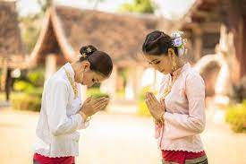
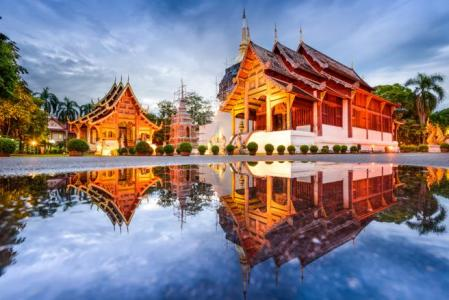

Ubicacion geografica
Los 514.100 Kilómetros cuadrados de Tailandia están situados en el centro del sudeste asiático. La posición de Tailandia como eje de la zona ha influenciado muchos aspectos de su sociedad y de su cultura. Controla el único paso terrestre desde Asia a Malasia y Singapur.
Cultura
Existen siete períodos y temas sobre el arte de Tailandia durante los últimos 2000 años. Además, ha habido diferentes temas regionales en diferentes períodos, que algunos de ellos, ya no conforman la región actual de Tailandia. La cultura tailandesa ha sido moldeada por muchas influencias, incluidas la india, laosiana, birmana, camboyana y china. El saludo tradicional tailandés, el wai, generalmente es ofrecido primero por el más joven de las dos personas reunidas, con las manos juntas, las yemas de los dedos apuntando hacia arriba mientras la cabeza se inclina para tocar las yemas de los dedos, generalmente coincidiendo con las palabras habladas "sawatdi khrap "para hablantes masculinos y" sawatdi kha "para mujeres. El anciano puede responder de la misma manera. El estado social y la posición, como en el gobierno, también influirán en quién realiza primero el wai.
Arquitectura
La arquitectura es el medio preeminente del legado cultural del país y refleja tanto los desafíos de vivir en el clima a veces extremo de Tailandia como, históricamente, la importancia de la arquitectura para el sentido de comunidad y creencias religiosas del pueblo tailandés. Influenciado por las tradiciones arquitectónicas de muchos de los vecinos de Tailandia, también ha desarrollado una variación regional significativa dentro de sus edificios vernáculos y religiosos. Un templo tipo wat comprende los siguientes elementos: 
- Mondop (en tailandés, มณฑป, del sánscrito mandapa) - habitualmente un edificio cuadrado abierto por los dados, recubiertos por cuatro bóvedas y de un techo piramidal, utilizado para albergar los textos o los objetos religiosos de culto.
- Chedi o estupa (tailandés : เจดีย์, del sánscrito chaitya - templo) - el relicario generalmente cónico o en forma de campana, que a veces contiene reliquias de Buda;
- Bot (tailandés: โบส) o ubosot (tailandés: อุโบสถ) del pali uposatha) - la sala de oración más sagrada.
- Wihan (en tailandés, วิหาร, del sánscrito vihara) - una sala de reuniones y de oración, arquitectónicamente semejante al bot, pero sin las estelas Sima y menos decorada
- Sala (en tailandés, ศาลา, del sánscrito shala - escuela) - un pabellón para el descanso y diversas actividades
- Ho trai (en tailandés, หอไตร) - biblioteca donde se conservan los escritos budistas
- Ho klong (en tailandés, หอกลอง) - torre del tambor
- Ho rakhang (en tailandés, หอระฆัง) - campanario.

Musica y baile
Además de los bailes folclóricos y regionales (Menora (danza) y Ramwong, en el sur de Tailandia, por ejemplo), las dos formas principales de drama de danza clásica tailandesa son Khon y Lakhon nai. Al principio, ambos eran entretenimientos exclusivamente de la corte y no fue hasta mucho después que un estilo popular de teatro de baile, probablemente, evolucionó como una diversión para la gente común que no tenía acceso a las actuaciones reales.
Deporte nacional
El muay thai, o el boxeo thai, es el deporte nacional en Tailandia siendo además un arte marcial nativo. Esta disciplina alcanzó popularidad en todo el mundo por su efectividad durante la década de 1990 llegando a convertirse en uno de los deportes de contacto más populares en el mundo. Aunque existen otras artes marciales similares en otros países del Oriente Lejano, pocas tienen la dureza del Muay Thai donde se permiten golpes con los codos, rodillas, puños y pies, incluso creando una nueva especialidad, el Kick Boxing. Practicantes famosos como Buakaw Banchamek, Samart Payakaroon, Dieselnoi Chor Thanasukarn y Apidej Sit-Hirun. Buakaw Banchamek probablemente ha traído más interés internacional en Muay Thai que cualquier otro luchador de Muay Thai.